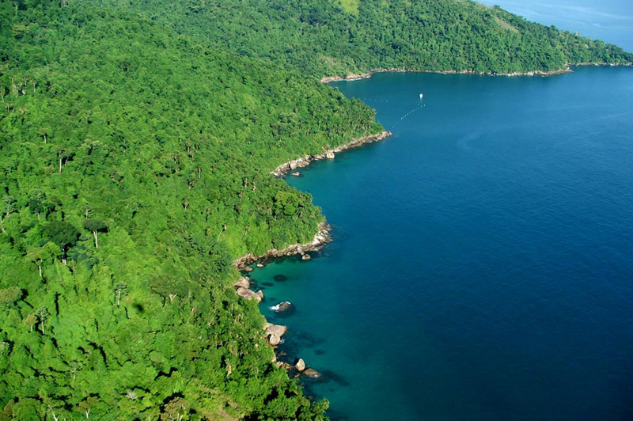
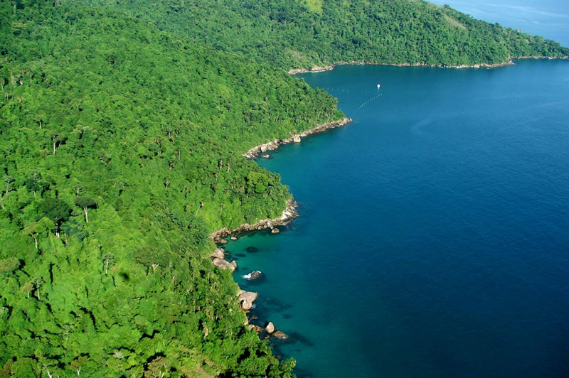
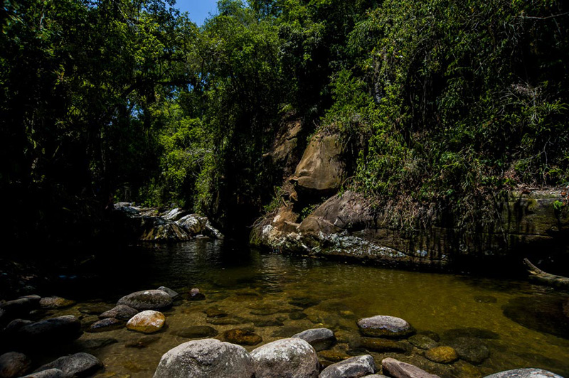
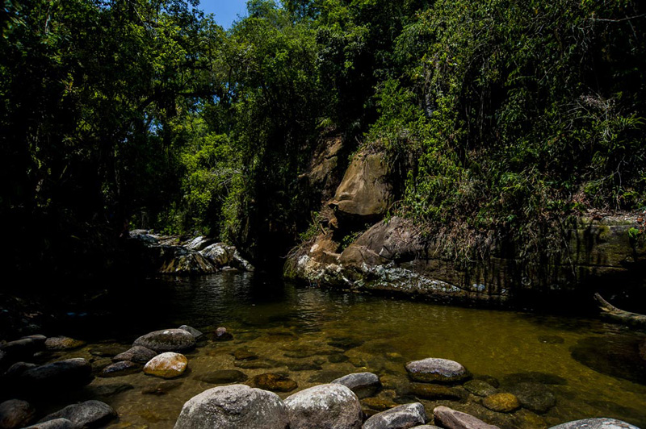

Paraty é um pedacinho do passado brasileiro, que nos remete ao período colonial, através de suas fortificações, ruas, casarões preservados e sua cultura. A história de Paraty é marcada por importantes acontecimentos ao longo dos séculos, como a participação nos ciclos da cana, do ouro e do café. A partir de agora, você é nosso convidado especial para relembrar toda esta trajetória, que levou Paraty a se tornar um Patrimônio Histórico Nacional
.As terras em que hoje a cidade de Paraty se encontra, eram ocupadas na época do descobrimento pelos índios Guaianás, e logo depois pertenceriam à Capitania de São Vicente. A trilha aberta pelos Guaianás ligando o litoral ao interior do Brasil atraíram os colonos da Capitania de São Vicente, que no século XVI iniciaram o povoamento de Paraty em um morro próximo à foz do Rio Perequê-Açu. Ao se instalarem neste morro, surgiram as primeiras construções em Paraty de que se tem notícia, incluindo a capela de São Roque, padroeiro deste povoado na época. Em 1646, o povoado transferiu-se para um local maior e plano, entre os rios Perequê-Açu e Patitiba, onde se desenvolveu e deu origem ao atual Centro Histórico. Este novo local fora doado por Dona Maria Jácome de Melo, sob duas condições: a primeira, de que se edificassem uma capela sob invocação de Nossa Senhora dos Remédios a quem era devota, e a outra, que não se molestassem os índios que aqui viviam. A partir daí o morro do núcleo de São Roque passou a se chamar Morro da Vila Velha.
Somente em meados do século XX que Paraty retoma seu desenvolvimento através do Ciclo do Turismo, que se tornou a principal fonte de renda e base da economia local. Com a reabertura da estrada Paraty-Cunha em 1954, que a ligava ao Estado de São Paulo, e a abertura da BR-101 na década de 1970 que liga Rio de Janeiro a Santos, a cidade foi redescoberta e tornou-se um polo de atração turística. Em 1958 o conjunto histórico de Paraty foi tombado pelo IPHAN – Instituto do Patrimônio Histórico e Artístico Nacional. Hoje a cidade tem sua vocação principal no Turismo, recebe dezenas de eventos anualmente, e tornou-se um dos principais polos turísticos do Brasil. Paraty se destaca não só pela sua rica cultura, mas também pelas riquezas naturais e sua excelente gastronomia e vida noturna. Venha descobrir os encantos de Paraty!

Conheça alguns dos pontos mais atrativos de paraty para você visitar:
Confira algumas belíssimas imagens da cidade na galeria abaixo:

 


 
